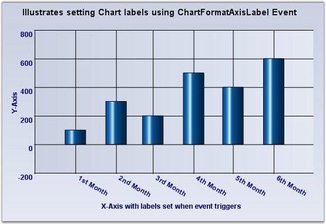
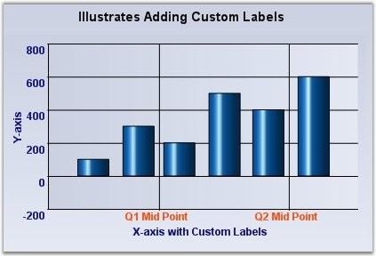
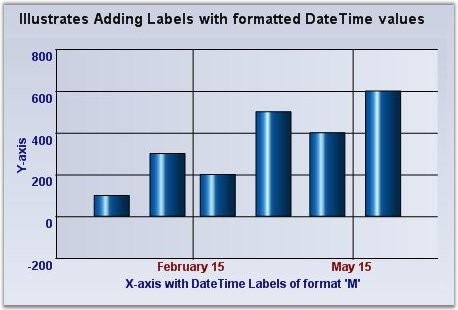

The formatting options above will usually satisfy the label text requirements. However, there are many other scenarios where this might not be sufficient. Here are some ways to customize the text rendered in the label.
Customizing the label text for the automatically generated intervals
|
ChartAxis Event |
Description |
|
ChartFormatAxisLabel |
The event that gets raised for each label before getting rendered. This is a good place to customize the label text. |
The following ChartFormatAxisLabelEventArgs properties provide information specific to this event.
|
ChartFormatAxisLabel Property |
Description |
|
AxisOrientation |
Returns the orientation of the axis for which the label is being generated. |
|
Handled |
Indicates whether this event was handled and no further processing is required from the chart. |
|
IsAxisPrimary |
Indicates whether the axis for which the label is being generated is a primary axis. |
|
Label |
Gets / sets the label that is to be rendered. |
|
Value |
Returns the value associated with the position of the label. |
|
ValueAsDate |
Returns the value associated with the position of the label as DateTime. |
|
Tooltip |
Specifies the content of the tooltip. |
|
[C#]
private void chartControl1_ChartFormatAxisLabel(object sender, ChartFormatAxisLabelEventArgs e) { if (e.AxisOrientation == ChartOrientation.Horizontal) { if (e.ValueAsDate.Month == 1) e.Label = "1st Month"; else if (e.ValueAsDate.Month == 2) e.Label = "2nd Month"; else if (e.ValueAsDate.Month == 3) e.Label = "3rd Month"; else if (e.ValueAsDate.Month == 4) e.Label = "4th Month"; else if (e.ValueAsDate.Month == 5) e.Label = "5th Month"; else if (e.ValueAsDate.Month == 6) e.Label = "6th Month"; e.Handled = true; } } |
|
[VB]
Private Sub chartControl1_ChartFormatAxisLabel(ByVal sender As Object, ByVal e As ChartFormatAxisLabelEventArgs) If e.AxisOrientation = ChartOrientation.Horizontal Then If e.ValueAsDate.Month = 1 Then e.Label = "1st Month" ElseIf e.ValueAsDate.Month = 2 Then e.Label = "2nd Month" ElseIf e.ValueAsDate.Month = 3 Then e.Label = "3rd Month" ElseIf e.ValueAsDate.Month = 4 Then e.Label = "4th Month" ElseIf e.ValueAsDate.Month = 5 Then e.Label = "5th Month" ElseIf e.ValueAsDate.Month = 6 Then e.Label = "6th Month" End If e.Handled = True End If End Sub |

Figure 258: Customized Chart Labels
Specify a set of custom labels thereby dictating the intervals as well
1. Using Custom Text
|
ChartAxis Property |
Description |
|
TickLabelsDrawingMode |
AutomaticMode - Labels will be determined by the engine. UserMode - Labels from the Labels collection will be used. BothUserAndAutomaticMode - Both labels from the automatic mode and user mode will be rendered. None - Labels will not be rendered. |
|
Labels |
A custom collection that lets you fully customize the labels that gets generated. The TickLabelsDrawingMode should be set to UserMode or BothUserAndAutomaticMode. |
|
[C#]
//Setting drawing mode this.chartControl1.PrimaryXAxis.TickLabelsDrawingMode = ChartAxisTickLabelDrawingMode.UserMode;
//Adding new labels this.chartControl1.PrimaryXAxis.Labels.Add(new ChartAxisLabel("Q1 Mid Point", Color.OrangeRed, new Font("Arial", 8F, System.Drawing.FontStyle.Bold), new DateTime(2007, 2, 15), "", "", ChartValueType.Custom)); this.chartControl1.PrimaryXAxis.Labels.Add(new ChartAxisLabel("Q2 Mid Point", Color.OrangeRed, new Font("Arial", 8F, System.Drawing.FontStyle.Bold), new DateTime(2007, 5, 15), "", "", ChartValueType.Custom)); |
|
[VB]
'Setting drawing mode Me.chartControl1.PrimaryXAxis.TickLabelsDrawingMode = ChartAxisTickLabelDrawingMode.UserMode
'Adding new labels Me.chartControl1.PrimaryXAxis.Labels.Add(New ChartAxisLabel("Q1 Mid Point", Color.OrangeRed, New Font("Arial", 8F, System.Drawing.FontStyle.Bold), New DateTime(2007, 2, 15), "", "", ChartValueType.Custom)) Me.chartControl1.PrimaryXAxis.Labels.Add(New ChartAxisLabel("Q2 Mid Point", Color.OrangeRed, New Font("Arial", 8F, System.Drawing.FontStyle.Bold), New DateTime(2007, 5, 15), "", "", ChartValueType.Custom)) |

Figure 259: Chart with 'Q1 Mid Point' and 'Q2 Mid Point' Custom Labels
2. Using Formatted Text
|
[C#]
//Setting drawing mode this.chartControl1.PrimaryXAxis.TickLabelsDrawingMode = ChartAxisTickLabelDrawingMode.UserMode;
'Adding new labels this.chartControl1.PrimaryXAxis.Labels.Add(new ChartAxisLabel("", Color.Maroon, new Font("Arial", 9F, System.Drawing.FontStyle.Bold), new DateTime(2007, 2, 15), "", "M", ChartValueType.DateTime)); this.chartControl1.PrimaryXAxis.Labels.Add(new ChartAxisLabel("", Color.Maroon, new Font("Arial", 9F, System.Drawing.FontStyle.Bold), new DateTime(2007, 05, 15), "", "M", ChartValueType.DateTime)); |
|
[VB]
'Setting drawing mode Me.chartControl1.PrimaryXAxis.TickLabelsDrawingMode = ChartAxisTickLabelDrawingMode.UserMode 'Clearing all the default labels this.chartControl1.PrimaryXAxis.Labels.Clear() 'Adding new labels Me.chartControl1.PrimaryXAxis.Labels.Add(New ChartAxisLabel("", Color.Maroon, New Font("Arial", 9F, System.Drawing.FontStyle.Bold), New DateTime(2007, 2, 15), "", "M", ChartValueType.DateTime)) Me.chartControl1.PrimaryXAxis.Labels.Add(New ChartAxisLabel("", Color.Maroon, New Font("Arial", 9F, System.Drawing.FontStyle.Bold), New DateTime(2007, 05, 15), "", "M", ChartValueType.DateTime)) |

Figure 260: DateTime formatted labels at the specified Intervals